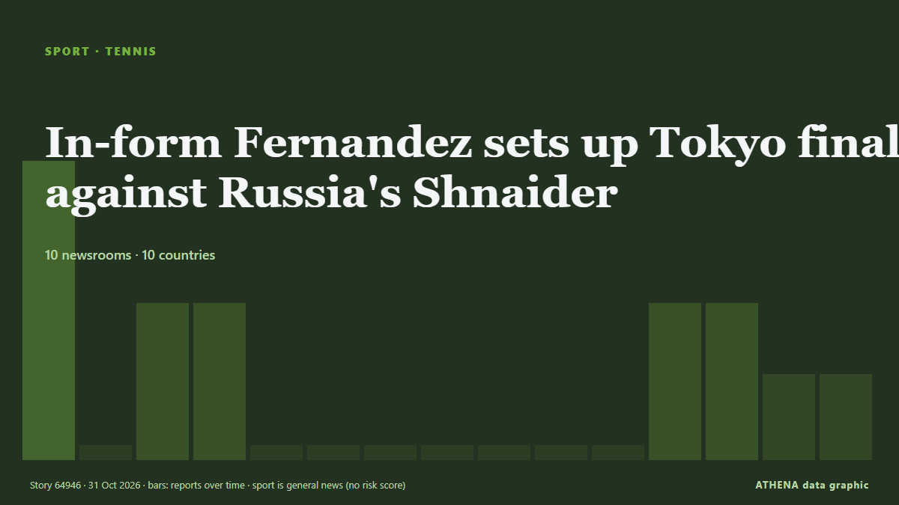

In-form Fernandez sets up Tokyo final against Russia's Shnaider

The world number 23 from Canada defeated Uzbekistan's Kamilla Rakhimova 7-5, 6-3 to reach her second consecutive final. de Free Malaysia Today
Informado de forma independiente por 10 medios de 10 países desde el 30 oct; el primero fue Sky Sports; la cobertura va perdiendo fuerza. Deportes y cultura se archivan sin evaluación de riesgo. La confianza es del 90 % (alta): lo corroboran 10 medios independientes, con una fiabilidad media de las fuentes del 75 %. Medios por país: Malasia (2), Arabia Saudí (2), Catar (2). Cobertura: del 30 oct al 31 oct, 30 horas.
Qué ha cambiado: 8 informaciones nuevas de 8 redacciones en las 24 horas hasta el 31 oct.
Primer titular: World number one Rybakina withdraws in Tokyo with injury
Los titulares se muestran en inglés, tal como se publicaron.
De un vistazo
Seleccionado, puntuado y redactado por la metodología publicada de ATHENA. Ningún editor interviene en eventos concretos. Cómo se elabora ›
| 30 Oct 07:10 UTC | 4 |
|---|---|
| 30 Oct 09:10 UTC | 0 |
| 30 Oct 11:10 UTC | 2 |
| 30 Oct 13:10 UTC | 2 |
| 30 Oct 15:10 UTC | 0 |
| 30 Oct 17:10 UTC | 0 |
| 30 Oct 19:10 UTC | 0 |
| 30 Oct 21:10 UTC | 0 |
| 30 Oct 23:10 UTC | 0 |
| 31 Oct 01:10 UTC | 0 |
| 31 Oct 03:10 UTC | 0 |
| 31 Oct 05:10 UTC | 2 |
| 31 Oct 07:10 UTC | 2 |
| 31 Oct 09:10 UTC | 1 |
| 31 Oct 11:10 UTC | 1 |
Por qué estas cifras
Importancia
Riesgo
Confianza
La cobertura: quién informó y cuándo
titular tal como se publicó · abre el original- Sky Sports · Reino UnidoDart into Guangzhou Open semi as Rybakina injured in Tokyo
- Free Malaysia Today · MalasiaWorld number one Rybakina withdraws in Tokyo with injury
- Asharq Al-Awsat (English) · Arabia SaudíWTA’s Top-Ranked Elena Rybakina Withdraws from Quarterfinals in Japan, Citing an Injury
- ABC News Australia · AustraliaJoint's promising run in Japan ends with QF exit
- Al Jazeera English · CatarWorld number one Rybakina withdraws from Pan Pacific Open with neck injury
- Oman Observer · OmánRybakina withdraws from Tokyo quarters, Eala out
- CNA (Channel NewsAsia) · SingapurRybakina withdraws from Tokyo quarter-finals with neck injury
- Business Recorder · PakistánRybakina withdraws from Tokyo quarter-finals with neck injury
- Al Jazeera English · CatarCanada’s in-form Leylah Fernandez reaches Pan Pacific Open final in Tokyo
- Punch · NigeriaTennis: Fernandez beats Rakhimova to reach Tokyo final
- Asharq Al-Awsat (English) · Arabia SaudíLeylah Fernandez Advances to Tokyo WTA Final with Win over Rakhimova
- Free Malaysia Today · MalasiaIn-form Fernandez sets up Tokyo final against Russia’s Shnaider
- TASS (English) · RusiaRussia’s Shnaider through to final of 2026 WTA Toray Pan Pacific Open in Tokyo
- Oman Observer · OmánIn-form Fernandez sets up Tokyo final against Russia's Shnaider